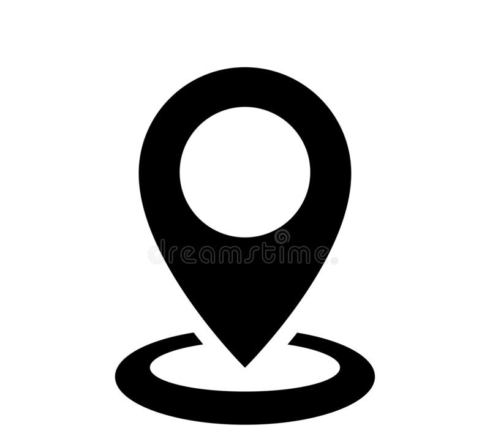
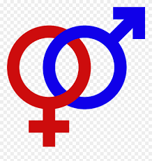

INFORMATII PERSONALE
.......................................................................................................................................................................................................................................................................
 Nume/Prenume: Vasiu Ionatan
Nume/Prenume: Vasiu Ionatan
 Adresa(e): Str. Stefan Luchian nr. 27 ,Sibiu,Romania
 Telefon(oane): mobil:0754406654
Telefon(oane): mobil:0754406654
Email: ionatanvasiu53@gmail.com
Nationalitate: Romana
Data nasterii: 18.03.2001
Sex: Masculin
EDUCATIE SI FORMARE
.......................................................................................................................................................................................................................................................................
octombrie 2020-prezent
iulie 2020
iunie 2020
mai 2020
Student la Universitatea "Lucian Blaga" Sibiu ,Facultatea de Inginerie - Calculatoare si Tehnologia Informatiei
Diploma absolvire Bacalaureat -media 9.41
Colegiul National "Octavian Goga" Sibiu- media 9.22
Diploma atestat informatica -media 9.75
EXPERIENTA DE LUCRU
.......................................................................................................................................................................................................................................................................
[01.12.2021-14.12.2021]
Decorator de interioare:
pozitia ocupata:impodobitor de
interioare
locatie:Sibiu,Romania
Am decorat ,impreuna cu o echipa ,2 mall-uri din Sibiu pentru
peroiada Craciunului.
[05.07.2021-15.09.2021]
Ucenic electrician:
Pozitia ocupata: electrician junior in firma CBS Eastern Europe
Am ocupat pozitia de electrician junior ,lucrand impreuna cu multe persoane cu experienta in
domeniu. Am invatat multe elemente de electricitate pe baza construirii
multor panouri
electrice si instalatii electrice, cat si pe baza verificarii instalatilor cu probleme ale firmelor
partenere din tara.
[10.07.2020-19.07.2020]
Ucenic electrician:
Pozitia ocupata: electrician junior in firma CBS Eastern Europe
Am ocupat pozitia de electrician junior ,lucrand impreuna cu alt electrician din firma CBS prin
diferite fabrici,magazine sau birouri ale firmelor partenere din Sibiu
pentru
intretinerea,repararea si imbunatatirea sistemlor electrice.De asemenea, in aceasta perioada am
lucrat impreuna cu o echipa de constructori si electricieni cu scopul
de a dota mai multe
locuite cu o retea electrica cu ajutorul contractelor de scurta perioada.
[28.06.2019-11.09.2019]
Muncitor calificat
Pozitia ocupata:Muncitor calificat in firma CBS Eastern Europe
Am lucrat in domeniul constructilor in firma CBS Eastern Europe cu ocazia modificariilor
necesare in sediul firmei . Am ajutat la transportul materialelor,lucru cu
ciment si mortar si
vopsirea mai multor .La finalul perioadei respective am lucrat si in domeniul de design
interior,ocupandu-ma impreuna cu o echipa de imobilarea
mai multor sali.De asemenea,in aceasta
perioada de timp am lucrat ,tot prin intermediul acestei firme ,la construirea unei cabane . Astfel
am dobandit experienta in
lucrul cu lemnul si intretinerea acestuia pe tot timpul anului.
[23.06.2018-05.09.2018]
Muncitor calificat
Pozitia ocupata:Muncitor calificat in firma CBS Eastern Europe
Am lucrat in domeniul constructilor in firma CBS Eastern Europe cu ocazia construirii unui nou
sediu pentru firma CBS. Am participat in mai multe domenii de lucru
in perioada aceasta:lucrul
cu ciment,construirea unui nou acoperis,organizarea materialelor de constructii,vopsirea mai multor
obiecte.In aceasta perioada am invatat
denumirea si rolul fiecarei unelte de constructii cat si
cele electrice si am dobandit o mare experienta in utilizarea acestora.
Pozitia ocupata:Organizator de elemente de arta
Am ajutat la organizarea elementelor de arta ale unui pictor sibian , Alex Valt ,introducand toate tablourile intr-un sistem pe baza dimensiunilor acestora,
calitatii si tipului de arta.Acestea au fost mai tarziu puse la expozitie in Turnul Sfatului,Sibiu.
APTITUDINI SI COMPETENTE
.......................................................................................................................................................................................................................................................................
| ASCULTARE | CITIRE | SCRIERE | VORBIRE | DISCURS |
| C2 | C2 | B2 | B1 | B1 |
| ASCULTARE | CITIRE | SCRIERE | VORBIRE | DISCURS |
| A1 | B1 | B2 | B2 | B1 |
Cateva aspecte care ma caracterizeaza sunt comunicativitatea, punctualitatea, onestitatea, perseverenta si abilitatea de a ma adapta
Manifest spirit analitic si obiectiv, dobandit de-a lungul anilor de studiu parcursi.
DOMENII DE PRICEPERE
.......................................................................................................................................................................................................................................................................
Utilizator avansat al Microsoft Office Word,Excel,PowerPoint precum si programe precum: Matlab Simulink,LTSpice,RStudio si Assembly 8086 .
O bine intelegere a retelelor electrice si functionarii acestora ,precum si familiarizarea cu uneltele si materialele din domeniul de electricitate.